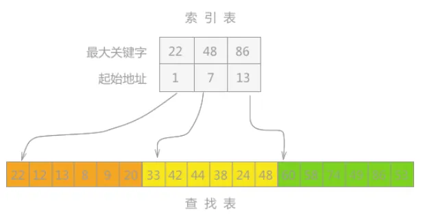
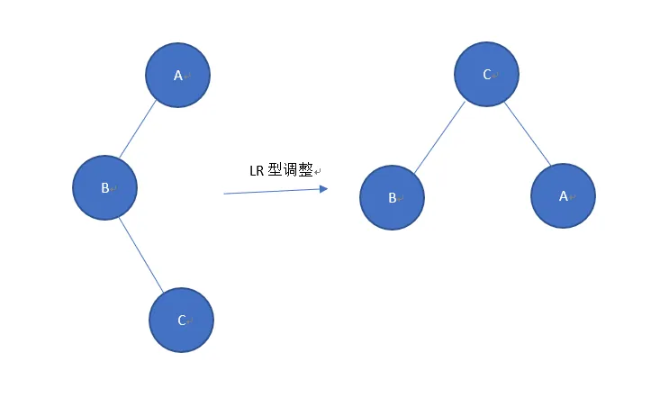

— DATA STRUCTURE / 09
第九章 查找算法
顺序、折半、分块、二叉排序树、平衡树与哈希表；比较次数与 ASL 是统一的度量。
01 / SECTION
线性（顺序）查找介绍与实现
- 查找算法：在一批数据中定位某个特定数据的方法；与遍历高度相似，区别是它未必访问全部数据（如二分查找）。
- 典型场景：已知特征，从一堆商品中挑出次品。
- 顺序（线性）查找：从一个端点开始依次访问每个数据，直到找到目标；本质上就是遍历。
- 实现即一层 for 循环：
if(a[i] == 目标){ 记录/输出位置; } - 例题：6 件商品重量为 10，其中一件为 9 的次品，用数组存后遍历即可定位。
- 复杂度：平均 O(n)，最坏 O(n)；优点是无须有序、实现最简单，适合小数据量或无序数据。
- 前提对比：顺序查找适用于无序表或链式存储；一旦数据有序且顺序存储，就应改用更快的折半查找。
- 静态查找（顺序、折半、分块）在本章前半部分，动态查找（二叉排序树、平衡二叉树）在后半部分。
02 / SECTION
折半查找（二分查找）介绍与实现
- 前提条件：线性表必须顺序存储，且元素按关键字有序（特殊数据情形可例外，如“只有一个次品”的场景）。
- 基本思想：每次取中点 a[n/2] 与 x 比较：
- 相等 → 找到，结束；
- x < a[n/2] → 到左半部分继续找；
- x > a[n/2] → 到右半部分继续找。
- 复杂度推导：剩余元素数依次为 n, n/2, n/4, …, n/2ᵏ，令 n/2ᵏ = 1 得 k = log₂n，故时间复杂度 O(log₂n)。
- 代码要点：
low = 0, high = len-1，while(low <= high)循环，mid = (low+high)/2；相等则返回，大于则high = mid-1，小于则low = mid+1；循环结束未找到返回 -1。 - 易错点：
==不能写成=；循环条件必须是low <= high（用<会漏掉最后一个元素）。 - 变体：找第一个 ≥ x 的位置（lower_bound）、最后一个 ≤ x 的位置（upper_bound），是二分答案的基础。
- 记忆：二分只对有序数据有效，无序先用排序（O(n log n)）再二分，通常比顺序查找划算。
03 / SECTION
分块查找算法介绍与实现
- 定位：折半查找与顺序查找的折中改进——只要求索引表有序，块内元素可任意存放，因此特别适合结点动态变化的数据。
- 两个核心：① 建立索引表；② 分块处理。
- 分块要求：把线性表分成若干块，块内任意，但块与块之间必须有序——第 i 块所有关键码都小于第 i+1 块所有关键码（非递减）。
- 索引表：每块的最大关键码 + 该块起始位置，按块顺序存入辅助数组，天然有序。
- 查找过程（两步）：
- 先在索引表中查找（可顺序也可折半）确定目标所在块；
- 再在该块内顺序查找，定位具体元素。
- 示例：查 38 时，索引表最大关键码为 22、48、86，因 22 < 38 < 48 锁定第二块；第二块起始位置为第 7 位，从第 7 位顺序查到第 10 位命中。
- 复杂度：总代价 ≈ 索引查找 + 块内顺序查找，均摊 O(√n)，介于 O(log n) 与 O(n) 之间。
- 生活映射：学校按班级存档，先定班级（索引），再在班级内查找学生——正是分块查找。

04 / SECTION
动态查找-二叉排序树介绍与实现
- 二叉排序树（BST）：插入即自动保持有序的树结构，属动态查找；STL 的 set 底层红黑树即同类结构。
- 三条性质：
- 左子树不空时，左子树上所有结点值 ≤ 根值；
- 右子树不空时，右子树上所有结点值 ≥ 根值；
- 左右子树本身也都是二叉排序树。
- 查找：空树则失败；值等于根则命中；小于根走左子树，大于根走右子树。平均 O(log n)，最坏退化成链 O(n)。
- 插入：按查找路径走到空位置再挂上新结点。递归实现：
t == NULL时新建结点（置左右为空）返回；key < t->data递归插左，否则递归插右。 - 建树：循环对数组每个元素调用
InsertBST，即得到整棵树；中序遍历必为有序序列。 - 删除四种情况：
- 叶子结点：直接删（断开父指针）；
- 只有左子树：用左子树顶替该位置；
- 只有右子树：用右子树顶替该位置；
- 左右子树都有：找中序前驱（左子树中最右的结点）s，用
s->data覆盖待删结点，再删掉 s（s 现在至多只有左子树）。 - 代码要点：
Delete里用q记住 s 的双亲，q != *p时接q->rchild = s->lchild，否则q->lchild = s->lchild；最后free(s)。
05 / SECTION
动态查找-平衡二叉树
- 定义：空树，或左右子树高度差绝对值 ≤ 1 且左右子树都是平衡二叉树的二叉排序树。
- 常见实现：AVL 树（最经典）、红黑树、替罪羊树、Treap、伸展树。
- AVL 性质：
- 必须是二叉查找树；
- 左右子树都是平衡二叉树，深度差绝对值不超过 1；
- 平衡因子 BF = 左子树深度 − 右子树深度，只能取 -1、0、1；
- 任一结点 BF 绝对值大于 1 即失衡。
- 实现思路：按 BST 方式插入 → 若失衡，按“新插入结点与最低不平衡结点的位置关系”调整，共四种类型：
- LL 型（在左孩子的左子树插入）→ 右单旋；
- RR 型（在右孩子的右子树插入）→ 左单旋；
- LR 型（在左孩子的右子树插入）→ 先左旋再右旋（双旋）；
- RL 型（在右孩子的左子树插入）→ 先右旋再左旋（双旋）。
- LR 型调整三步（以 A 为失衡点、B 为左孩子、C 为 B 的右孩子为例）：
- 把 B 的左孩子 C 提升为新的根；
- 原根 A 降为 C 的右孩子；
- 其余子树按大小关系挂接：BL 与 AR 位置不变，CL 调整为 B 的右子树，CR 调整为 A 的左子树。
- 复杂度：AVL 树高度始终 O(log n)，查找、插入、删除均为 O(log n)，代价是维护平衡的旋转开销。
